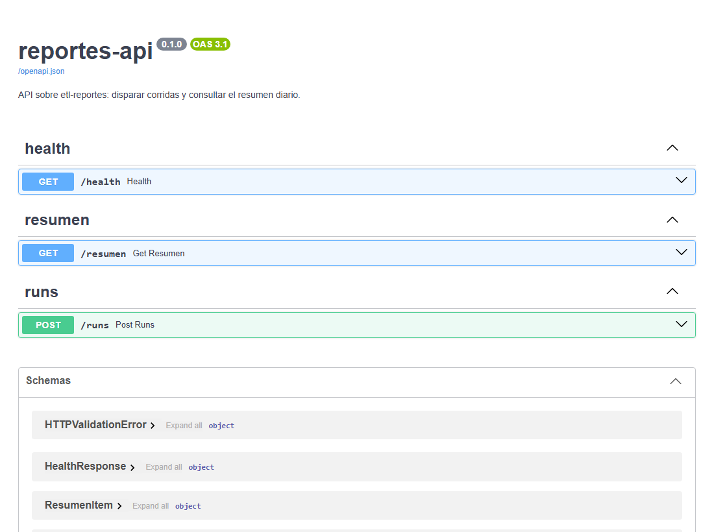
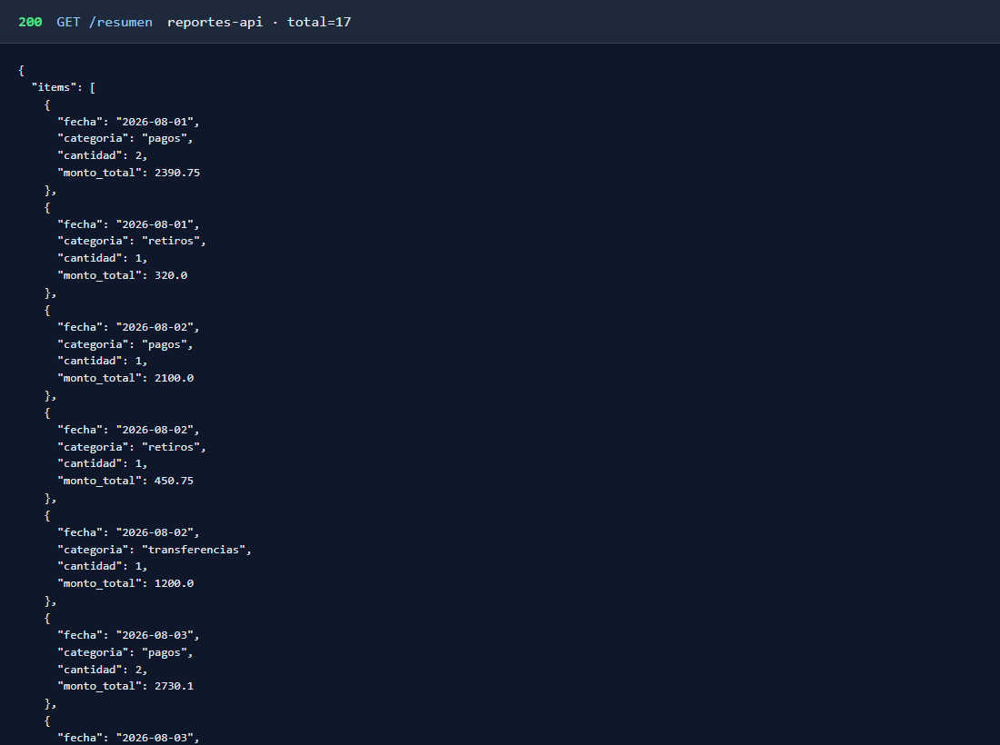
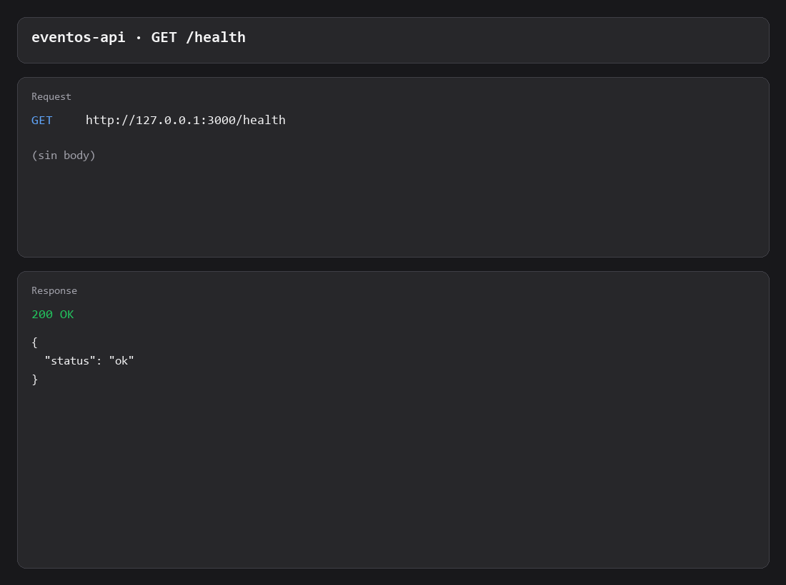
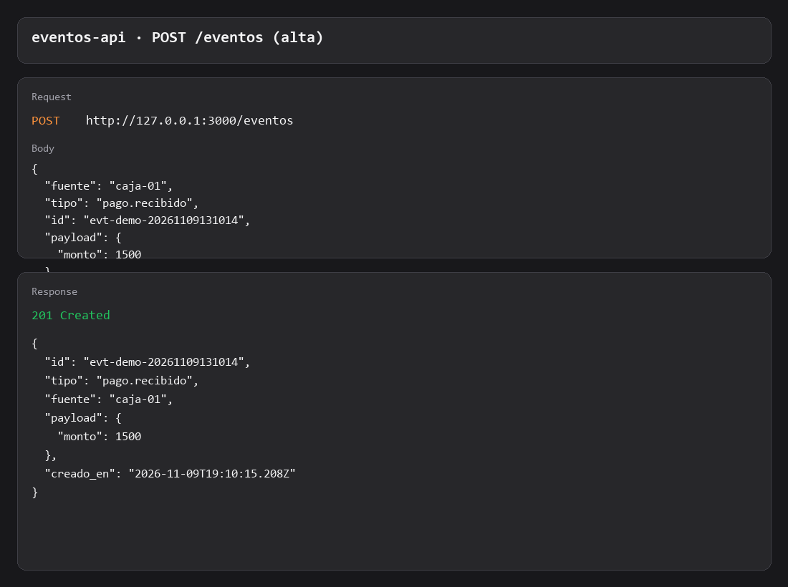

Proyectos
GitHub · demosPatrón que une demos
Idempotencia:
eventos-api
(mismo id → 200) y
etl-reportes
(reproceso seguro / SQL). Misma idea en webhook y en batch.
Java — auth → CRUD → cliente
Tres demos encadenadas: JWT, catálogo REST y cliente OpenFeign contra esos servicios. catalogo-mongo-api es el mismo estilo de CRUD con MongoDB (solo demo / portafolio).
- auth-api — register / login /me · Spring Security · JWT
- productos-api — CRUD + validación · OpenAPI
- cliente-servicios-remotos — OpenFeign + WireMock
- catalogo-mongo-api — demo NoSQL (MongoDB + Compose)
Demo — ETL y API
etl-reportes
·
reportes-api
— OpenAPI y GET /resumen


Demo — eventos-api (idempotencia)
eventos-api
— GET /health, POST 201 y el mismo POST 200



Más repos
- .NET — indicadores-api
- Python — etl-reportes · reportes-api
- Node.js — eventos-api